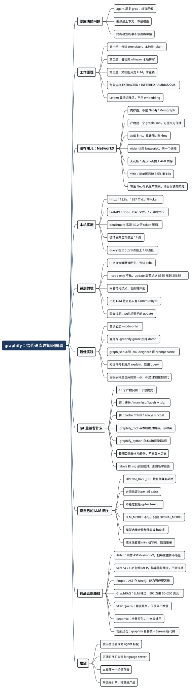

别让 agent 再 grep 了：用 graphify 给代码库先画一张图
Posted on 三 02 9月 2026 in Tech
| Abstract | 别让 agent 再 grep 了：用 graphify 给代码库先画一张图 |
|---|---|
| Authors | Walter Fan |
| Category | learning note |
| Version | v1.0 |
| Updated | 2026-09-02 |
| License | CC-BY-NC-ND 4.0 |
大纲
展开看看
- 它想解决什么：agent 的瓶颈是上下文，不是模型
- 它是什么：一个 CLI + 一个装进各家助手的 skill，产物是三个文件
- 工作原理：三趟处理、AST 优先、每条边都带置信标签
- 图存哪儿：用 NetworkX 而不是 Neo4j，省了运维，代价是 6.5% 的边被合并
- 本机实测：httpx 12.8 秒、FastAPI 9.5 秒、query / path / explain 的真实输出
- 不足之处：中文查询失效、
--code-only不粘、同名符号歧义、社区标签只是最大节点名 - 最佳实践：
.graphifyignore和.gitignore该怎么写，哪 5 个文件才该进版本库 - 换自己的 LLM 网关：不必用 Gemini key，以及模型名的三个坑
- 竞品对比：Aider / Serena / Potpie / GraphRAG / SCIP / Repomix，五条路线各自的账
- 未来展望：从"按需建图"到"常驻记忆层"，以及我不看好的部分
用 Claude Code 或者 Codex 改过大仓库的人，大概都见过这个画面：你问它"这个重定向逻辑是在哪儿处理的"，它开始 grep，grep 出三十个文件，挑五个读完，发现读错了地方，再 grep 一轮。十几分钟过去，token 烧掉几十万，答案还偏。
这不是模型不够聪明，是它没有地图。 换个人类新同事进来也一样——第一天靠 grep，第三个月靠脑子里那张"谁调谁、改这儿会崩哪儿"的图。区别只在于，人类会慢慢把图建起来，而 agent 每开一个新会话，都得从零 grep 一遍。
graphify 干的就是把这张图先建出来这件事：用 tree-sitter 把代码解析成一张知识图谱，存成 graph.json，之后所有问题都查图，不查文件。听上去很像又一个 RAG 项目，但它有个挺硬气的选择——不做向量检索，不用 embedding，纯 AST。
这篇文章我不打算复述 README。我在本机装了 0.9.53，拿 httpx 和 FastAPI 两个真仓库跑了一遍，下面所有的数字和输出都是我自己终端里出来的。结论提前说：代码这一半非常扎实，值得进你的日常工具箱；文档那一半目前还很粗糙，别抱期望。
它想解决什么
让 agent 看懂一个仓库，目前有四条路，各有各的毛病：
| 路子 | 怎么做 | 毛病 |
|---|---|---|
| grep / read | 关键词搜，命中什么读什么 | 关键词对不上就全盘皆输；跨文件关系完全看不见 |
| 全量塞上下文 | 把整个仓库塞进 context | 贵，而且大海捞针，长上下文里的信息反而被淹没 |
| 向量检索（RAG） | 切块、embedding、按相似度召回 | 召回的是"看起来像"的片段，不是"确实调用了"的关系；建索引要烧 token |
| 图谱 | 先建结构图，查图拿子图 | 建图有成本，图会过期，边可能是猜的 |
graphify 押的是第四条。它的判断是：代码这种东西，结构是确定的，不该用概率的办法去猜。 import 就是 import，class A(B) 就是继承，这些用语法树解析出来是百分百准确的，凭什么要先转成一堆浮点数再算余弦相似度？
这个判断我认同。写了这些年后端，我对"能确定的事情不要用统计方法"有近乎本能的偏好——就像你不会用机器学习去判断一个 JSON 是不是合法的。
它是什么：一个 CLI 加一层 skill
安装分两步，第二步是关键：
uv tool install graphifyy # 注意包名是 graphifyy，双 y；命令还是 graphify
graphify install # 把 skill 注册进你的 AI 助手
第二步会往你的助手里塞三样东西：一个 /graphify 命令、一段写进 AGENTS.md 的常驻指令、以及一个在工具调用前触发的 hook。我用 OpenCode 装的时候，它写进了 .opencode/plugins/graphify.js，逻辑很朴素——你第一次跑 bash 命令时，往前面拼一句提醒：
知识图谱在 graphify-out/，有具体问题请跑 graphify query，别去 grep 原始文件。
说白了就是在 agent 耳边念叨。这个设计有点土，但比指望模型自觉靠谱。README 里还提到 Claude Code 上有个 --strict 模式，会直接拦截会话里第一次读源码的动作、强制改道查图，之后再退回软提醒——这是承认了软提醒会被无视。
跑完之后你会拿到三个文件：
graphify-out/
├── graph.json 完整图谱，之后所有查询都读它
├── GRAPH_REPORT.md 给人看的摘要：核心节点、意外关联、循环依赖
└── graph.html 力导向图，浏览器里可点可搜
工作原理：三趟处理，各走各的路
这是我觉得设计得最漂亮的一点：它按文件类型分流，不同类型走完全不同的通道。
第一趟——代码，纯本地，零 token。 tree-sitter 解析出类、函数、导入、调用关系、注释。跑在你自己机器上，不联网，不需要任何 API key。我数了一下它的依赖，光 tree-sitter-* 的语法包就带了三十来个，从 Python、Go、Rust 到 Verilog、Fortran、PowerShell 都有。
第二趟——音视频，本地转写。 faster-whisper 转成文字。有个小巧思：转写时会把已经建好的代码图里连接数最多的那些概念（它叫 god nodes）当作提示词喂进去，这样领域术语转写得更准。
第三趟——文档、PDF、图片，走 LLM。 这一趟才花钱。如果你的语料里只有代码，这趟直接跳过。
三趟跑完，所有节点边合并成一张图。每条边有两个关键字段：
| 标签 | 含义 |
|---|---|
EXTRACTED |
源码里白纸黑字写着的，比如一条 import、一次直接调用。置信度恒为 1.0 |
INFERRED |
推断出来的，比如二次调用图分析。带 0.55~0.95 的离散分数 |
AMBIGUOUS |
拿不准，报告里单独标出来让人复核 |
这个区分我认为是整个项目最值钱的设计。 大部分 AI 工具给你一个答案，你没法判断它是读出来的还是编出来的。graphify 把这条界线摆到台面上——我在 httpx 上跑出来的比例是 92% EXTRACTED、8% INFERRED，FastAPI 是 98% / 2%。也就是说，九成以上的连接是可以当事实用的，剩下那一成需要你自己过脑子。
社区划分用的是 Leiden 算法（一种按边密度给图分组的经典方法，简单说就是"连得密的归一堆"），把大图切成若干子系统。这一步也不需要 embedding——它的论据是：语义相似的边本来就已经在图里了，图结构本身就是相似性信号。
插一段：它的图存在哪儿？NetworkX，不是 Neo4j
我自己做图相关的东西，习惯是起一个 Neo4j 或者 Memgraph，写 Cypher 查。所以看到 graphify 的依赖列表时我愣了一下——它没有图数据库，用的是 NetworkX。
NetworkX 是个 Python 库，不是服务。它把图完整放在进程内存里，用嵌套字典存邻接表，pip install 就能用，没有服务端、没有连接串、没有查询语言。你写的不是 Cypher，是普通 Python：
G = nx.Graph()
G.add_edge("Client", "Response", relation="uses", confidence="INFERRED")
nx.shortest_path(G, "Client", "Response")
落盘就是一个 graph.json（NetworkX 的 node-link 格式）。整个"图数据库"就是这么一个文件。
这个选择换来了什么
站在工具的立场上，这笔账算得挺清楚：
| NetworkX（graphify 的选择） | Neo4j / Memgraph | |
|---|---|---|
| 部署 | 无。pip install 完事 |
起服务、配端口、管账号 |
| 产物 | 一个 JSON 文件，可提交、可传给同事 | 一个需要运维的数据库实例 |
| 查询 | Python 函数调用 | Cypher，跨进程走网络 |
| 团队协作 | git 里 diff、merge | 每人自己起一个，或者共用一台 |
| 规模上限 | 受单机内存约束 | 上亿节点，磁盘为主 |
| 并发/事务 | 没有 | ACID、多客户端 |
对一个"给 agent 用的代码地图"来说，前四行的价值远大于后两行。agent 需要的是毫秒级的本地查询和一个能跟着仓库走的文件，不是一个要单独运维的服务。 我实测在 1637 节点的图上，json.load 加载 5 毫秒、重建成图对象 6 毫秒——这个量级的开销，你连缓存都不用想。
有意思的是，Aider 的 repo map 也用 NetworkX（它跑的是 PageRank 排序）。两个思路完全不同的工具，在"图存哪儿"这件事上做了同一个选择，说明这不是偷懒，是这类场景的合理解。
但内存图是有天花板的
我做了组压测，用合成图看它什么时候开始难受：
| 规模 | 构图耗时 | 峰值内存 | 序列化成 JSON |
|---|---|---|---|
| 2.5 万节点 / 5 万边 | 0.1s | 71 MB | 6.9 MB |
| 20 万节点 / 60 万边 | 1.5s | 371 MB | 74 MB |
| 100 万节点 / 300 万边 | 10.0s | 1385 MB | 376 MB |
百万节点要 1.4 GB 内存、376 MB 的 JSON，而且这个 JSON 每次重建都要整份重写。graphify 自己设了个 512 MB 的 graph.json 上限（可以用 GRAPHIFY_MAX_GRAPH_BYTES 调），HTML 可视化超过 5000 节点就自动降级成社区聚合视图——这些限制的根都在这儿。
参考一下：我实测 FastAPI（含文档）是 2.5 万节点、9 MB。所以对绝大多数单仓库，NetworkX 绰绰有余。真到了单体巨型仓库或者跨几十个仓库合并的场景，这套就该换了。
一个真实的代价：简单图会吞掉重复边
这条是我扒源码时发现的，值得单说，因为用过 Neo4j 的人会本能地掉进去。
graphify 用的是 nx.Graph——简单无向图，一对节点之间只能有一条边。而 Neo4j、Memgraph 都是多重图，A 和 B 之间可以同时存在 CALLS、REFERENCES、IMPORTS 三条独立的边。
那抽取出来的重复边去哪了？我直接调它的库测了一下 httpx：
RAW edges from extractor: 3736
unordered unique pairs: 3495
edges lost to collapse: 241 (6.5%)
6.5% 的边在建图时被合并掉了。 看被吞掉的都是什么组合：
32 ('references', 'uses')
16 ('inherits', 'uses')
15 ('calls', 'references')
13 ('method', 'references')
2 ('imports_from', 're_exports')
比如 httpx/__init__.py 和 httpx/__version__.py 之间，抽取器同时给出了 imports_from 和 re_exports 两条边——最后只留下一条，"这里做了重新导出"这个事实就没了。
公道地说，作者是知道这件事的，而且处理得比我预想的认真。源码里有一段很长的注释记录了一个踩坑：早期版本按字母序"后写覆盖先写"，结果 144 对同时有 calls 和 references 的边全被改写成了 references，而调用流分析不认这个关系，那些调用点就整个从调用图里消失了。现在的规则改成了具体关系不许被泛化关系覆盖（calls 打得过 references）。仓库里还专门有个 multigraph_compat.py，在为将来的 --multigraph 模式做运行时能力探测——注释里写着"尚无调用点"，说明这是个已排期未完成的改造。
还有个坑要提醒：它确实能导出 Cypher 灌进 Neo4j，但那是在合并之后。 我验证过，导出的 Cypher 语句数正好等于合并后的 3290 条，不是原始的 3736 条——换个后端并不能把丢掉的边找回来，因为损失发生在建图阶段，不在存储阶段。
对日常用途，6.5% 的损失基本无感（多数被合并的是同义边）。但如果你想拿它的图做严肃的依赖分析或者影响面评估，这个数得先记在账上。
实例：我在本机真跑了两个仓库
环境是 M 系列 Mac，Python 3.14，graphify 0.9.53。为了验证"代码这条路真的零成本"，我特意用 env -u OPENAI_API_KEY 把环境变量摘掉重跑了一遍，结果和带 key 时一模一样，报告里的 Token cost: 0 input · 0 output 是真的。
httpx：72 个代码文件，12.8 秒
git clone --depth 1 https://github.com/encode/httpx.git
cd httpx && graphify extract . --code-only --timing
输出：
[graphify extract] --code-only: skipping 47 non-code file(s) (37 docs, 0 papers, 10 images)
[graphify extract] found 72 code, 0 docs, 0 papers, 0 images
[graphify extract] 1 file(s) skipped as potentially sensitive: .netrc
[graphify timing] AST extract: 3.0s
[graphify timing] build: 9.5s
[graphify timing] cluster: 0.1s
[graphify timing] total: 12.8s
[graphify extract] wrote graph.json: 1637 nodes, 3290 edges, 99 communities
12.8 秒，1637 个节点，零 token。顺手夸一句：它主动跳过了 .netrc，因为可能含凭据。 这种默认行为说明作者是认真想过安全边界的。
再看 explain 的真实输出：
$ graphify explain "Client"
Node: Client
Source: httpx/_client.py L594
Community: 25
Degree: 37
Connections (37):
--> Response [uses] [INFERRED] httpx/_client.py:L787
--> BaseClient [inherits] [EXTRACTED] httpx/_client.py:L594
<-- request() [calls] [EXTRACTED] httpx/_api.py:L102
<-- _main.py [imports] [EXTRACTED] httpx/_main.py:L17
--> .request() [method] [EXTRACTED] httpx/_client.py:L771
...
注意每一行都带了文件名和行号。这不是"我觉得它们有关系"，是"第 594 行写着继承 BaseClient"。agent 拿到这个可以直接跳过去读那一行，不用再 grep。
GRAPH_REPORT.md 里我最喜欢的是循环依赖这一节，它自动挖出来 18 条：
## Import Cycles
- 3-file cycle: httpx/_content.py -> httpx/_exceptions.py -> httpx/_models.py -> httpx/_content.py
- 4-file cycle: httpx/_auth.py -> httpx/_models.py -> httpx/_multipart.py -> httpx/_types.py -> httpx/_auth.py
- 5-file cycle: httpx/_auth.py -> httpx/_models.py -> httpx/_content.py -> httpx/_multipart.py -> httpx/_types.py -> httpx/_auth.py
这东西不用 AI 也能算，但顺手就给你了，接手一个陌生仓库时挺有用——循环依赖的位置基本就是这个项目的历史包袱所在。
token 到底省了多少
它自带一个 benchmark 命令，我在 httpx 上跑的实测：
$ graphify benchmark
Corpus: 81,850 words → ~109,133 tokens (naive)
Avg query cost: ~2,784 tokens
Reduction: 39.2x fewer tokens per query
Per question:
[37.5x] how does authentication work
[75.1x] what is the main entry point
[23.1x] what connects the data layer to the api
39 倍。 这个对比其实偏乐观——它的分母是"把整个语料塞进去"，而现实中 agent 不会真这么干，它会 grep。但方向是对的：一次 query 拿回来两千多 token 的精确子图，确实比读五个文件划算得多。官方文档里在一个 52 文件的混合语料上报的是 71.5 倍，同时也老实承认在 6 个文件的小仓库上只有约 1 倍——语料小的时候，图的价值是结构清晰，不是省钱。 这句话说得挺实在。
FastAPI：1148 个文件，9.5 秒
[graphify extract] found 1148 code, 0 docs, 0 papers, 0 images
AST extraction: 1148/1148 uncached files (100%) [12 workers]
[graphify timing] AST extract: 5.9s
[graphify timing] total: 9.5s
[graphify extract] wrote graph.json: 8355 nodes, 15918 edges, 822 communities
文件数涨了 16 倍，耗时反而比 httpx 短。 AST 解析这一段是多进程并行的（ProcessPoolExecutor 绕开 GIL，12 个 worker 全开），5.9 秒啃完 1148 个文件。httpx 那次慢，慢在 build 阶段占了 9.5 秒——那段是单进程的图合并，跟文件数关系不大，跟符号密度有关。
查询同样是本地的。在一张 25685 节点的图上：
$ time graphify query "how are dependencies resolved"
Graph: graphify-out/graph.json (25685 nodes) | BFS depth=2 | 30 nodes found
...
graphify query 1.06s user 0.09s system 90% cpu 1.272 total
一秒出头，没有网络请求。
不足之处：我自己撞上的四件事
下面每条都是我在终端里遇到的，不是从 issue 列表抄的。 其中两条是真坑，另外两条是期望需要往下调。
一、中文查询直接失效
$ graphify query "连接池是怎么管理的"
No matching nodes found.
同一个图，换成英文 how is the connection pool managed 就能查到。原因不难猜：查询是靠分词后跟节点标签做匹配的，而中文不分词就是一整坨。它的 extras 里确实有个 chinese 选项（装 jieba），但默认不带，README 里也只有一行表格提了一嘴。对中文用户来说这是个静默失败——它不报错，只是告诉你"没找到"，你还以为是图没建好。
二、--code-only 不会粘在配置里
这个坑最阴。我第一次用 --code-only 建 FastAPI 的图，8355 个节点，干干净净。然后改了一行代码，跑了下增量更新：
$ echo "# WHY: 试一下增量" >> fastapi/routing.py
$ graphify update .
[graphify watch] Rebuilt: 25685 nodes, 33598 edges, 2290 communities
从 8355 涨到 25685。 一看节点构成：
document: 17314 code: 8155 rationale: 216
一万七千个文档节点。FastAPI 的 docs/ 目录下有十几种语言的翻译，update 没有继承 --code-only，把 docs/zh-hant/、docs/tr/、docs/ko/ 全部按标题结构切成节点塞进来了。图从 9MB 变成一堆多语言 Markdown 标题的索引，社区数从 822 涨到 2290，报告基本没法看了。
典型的"首次运行的参数没有持久化"。 绕过办法是写 .graphifyignore 把 docs/ 排掉，但你得先知道有这个坑。
而且这一万七千个节点基本是白涨的。我数了一下它们身上的边，contains（文件包含标题）占了 15622 条，references 1259 条——信息量约等于一份多语言目录。
三、同名符号会歧义，但报错很体面
$ graphify explain "solve_dependencies()"
Ambiguous: 'solve_dependencies()' matches 2 nodes in different files.
fastapi/dependencies/utils.py
id: fastapi_dependencies_utils_solve_dependencies
fastapi/routing.py
id: fastapi_routing_frontendroutegroup_solve_dependencies
Retry with the repo-relative path or the full node id.
这条我不算它扣分——它没有瞎猜一个，而是把两个候选都摆出来让你选，还告诉你怎么重试。 这是我希望所有工具都有的错误处理方式。但对 agent 来说这意味着多一轮交互，大仓库里重名函数遍地都是。
四、社区标签只是"最大节点的名字"
这条我先冤枉了它一次，值得记下来。我第一次跑图时顺手加了 --no-label，拿到 99 个 Community 0、Community 1，就写下"社区命名必须靠 LLM"。回头重跑才发现是我自己关掉的——不加那个参数、也不给任何 API key，它照样能出标签：
## Community Hubs (Navigation)
- client/test_auth.py
- _exceptions.py
- QueryParams
- Headers
- URL
所以 README 说的 "LLM-free labels" 是真的。但看清它的做法之后，期望也得往下调一点：标签就是这个社区里连接数最多的那个节点的名字，不是语义概括。Headers 那一簇确实是 headers 相关的，但 RuntimeError 那一簇里装的是什么，标签完全没告诉你。够用来导航，不够用来理解。
还有几点值得留意
- 图会过期。 报告里会写建图时的 commit hash，让你自己比对。它提供了 git hook（commit 和 checkout 时后台重建），但
git pull之后要手动graphify update .。多一个要维护的状态，就多一个会不一致的地方。 - 项目本身非常年轻。 PyPI 上第一个版本是 2026 年 4 月 4 日，到 8 月 30 日的 0.9.53 一共发了 221 个版本，平均一天一点五个版本。这个节奏说明迭代快，也说明接口还在动。你今天写的自动化脚本，下个月可能就要改。
- 开源部分是钩子。 Apache 2.0 授权，代码实打实——我拆开发行包数了一下，核心 6.5 万行 Python，测试 244 个文件，测试量比主代码还大。但 README 里反复出现 graphify.com 的企业版入口——"想要常驻、后台自动更新、覆盖会议和文档"的那个版本要付费。这不是原罪，只是选型时要算进去：免费的是引擎，托管的是产品。
- benchmark 得打个折看。 它公布的 LOCOMO / LongMemEval 成绩（recall@10 0.497，QA 76%）方法论披露得相当详细，连评审模型的一致性检验都给了（90.6% 一致，Cohen's kappa 0.81），这比大部分自吹自擂的项目强太多。但这终究是自己的 harness 跑自己和对手，参考可以，别当定论。
最佳实践：跑完之后我会这么配
1. 第一次一定加 --code-only，并且立刻写 .graphifyignore
graphify extract . --code-only
这是我实际在用的一份，可以直接抄：
# .graphifyignore
docs/
man/
doc/
.claude/
.codex/
.agents/
dist/
build/
bin/
local/
test/
*.generated.py
README.md
几点说明：
docs/doc/man/README.md是重灾区，理由见上面第二个坑。文档节点绝大多数只是目录索引，白白把图撑大。.claude/.codex/.agents/别忘了排。这些是 AI 助手的配置和 skill 目录，里面全是 Markdown，会被当文档吃进图里——你的 agent 配置本身没必要出现在代码地图上。test/要不要排看你。 排掉图更干净，但我在 httpx 上跑出来的"意外关联"有价值的几条恰恰来自测试文件。如果你想用它理解代码怎么被调用，就留着。.gitignore它会自动读，两者是合并的，.graphifyignore后生效——所以它只会排除更多，不会把.gitignore已排除的重新拉回来。
2. 中文用户先把 jieba 装上
uv tool install "graphifyy[chinese]"
不然你的中文查询会静默返回空。
3. 把 graph 产物加进 .claudeignore 或等价配置
graph.json
graphify-out/
这条 README 里藏在 troubleshooting 深处，但很关键：graphify 每次写 graph.json 都会让助手的 prompt cache 失效，下一轮对话整个上下文重新上传，按 cache-write 价格计费。省下来的 token 全从这儿漏回去了。
4. graphify-out/ 不要整个提交进 git
官方那句"graphify-out/ 是设计成要提交的"很容易误导人——git add 一把梭，你会提交进去一堆本地状态。我逐个查了源码，13 个文件里只有 5 个该进版本库：
| 文件 | 提交？ | 为什么 |
|---|---|---|
GRAPH_REPORT.md |
✅ | 给人看的摘要，diff 有意义 |
manifest.json |
✅ | 已改成相对路径，可移植，省掉首次全量重建 |
.graphify_labels.json |
✅ | 社区名——花了 LLM 的钱才拿到的 |
.graphify_labels.json.sig |
✅ | 必须和 labels 成对，见下 |
graph.json |
⚠️ | 图本体，看体积决定 |
graph.html |
❌ | 生成物，FastAPI 那份 1.8MB，每次都变 |
.graphify_analysis.json |
❌ | 中间产物，报告已经是它的成品 |
.graphify_root |
❌ | 存的是本机绝对路径 |
.graphify_python |
❌ | 存的是本机 Python 解释器路径 |
cache/ |
❌ | 本地缓存 |
cost.json |
❌ | 官方明说 local only |
2026-09-03/ 这类日期目录 |
❌ | 本地滚动备份，不是版本历史 |
直接抄的 .gitignore：
# --- graphify ---
graphify-out/cache/
graphify-out/cost.json
graphify-out/graph.html
graphify-out/.graphify_analysis.json
graphify-out/.graphify_root
graphify-out/.graphify_python
graphify-out/[0-9][0-9][0-9][0-9]-[0-9][0-9]-[0-9][0-9]/
如果已经 git add 了，撤回来：
git rm -r --cached graphify-out/cache graphify-out/graph.html \
graphify-out/.graphify_root graphify-out/.graphify_analysis.json \
graphify-out/2026-09-03
.graphify_root 这个坑值得单说。 源码注释管它叫 "committed marker"，但我实测它写进去的是本机绝对路径：
$ cat graphify-out/.graphify_root
/private/tmp/ck
更要命的是，我把目录复制到别处模拟同事 clone、再跑一次 graphify update .，它变成了 .。同一个工具、两台机器、两个值——提交它等于给团队埋一行永久冲突。 好在它只是个优化提示（帮助正确处理已删除文件的路径），删掉会自动退回启发式，我实测照样能查。.graphify_python 同理，存的是 uv tool 装出来的解释器路径，换台机器必然不对。
graph.json 看体积决定。 官方提供了 union-merge 的 merge driver（graphify hook install 会装）来避免冲突标记，但体积的账得自己算——我实测 FastAPI 那张图 9MB，每次 update 整份重写，git 存不了增量。一两百 KB 就提交，超过 1~2MB 我会只留报告和 manifest，让每人本地跑一次，反正代码路径零 token、十几秒的事。
5. labels 和 .sig 必须成对提交
这两个文件是社区命名的缓存和它的校验和。.sig 里存的是每个社区的成员指纹（sha256(排序后的节点 ID) 取前 16 位）：
// .graphify_labels.json
{"0": "Authentication and Security", "1": "Database Connection Management"}
// .graphify_labels.json.sig
{"0": "2b6fc8ce1badd9a4", "1": "33f897090c9ede07"}
为什么需要它：社区 ID 不是稳定标识符，每次重新聚类都会重排，今天的 cid 2 明天可能是完全不同的一簇，还顶着旧名字就是错的。.sig 用来回答"这个 cid 还是原来那一簇吗"。
我做了组对照实验——同一个仓库、完全相同的改动，唯一区别是有没有 .sig：
删掉 .sig：renamed 4 community(ies) by their hub
{"2": "Handler", ...} ← 名字丢了
保留 .sig：renamed 2 community(ies) by their hub
{"2": "Request Routing and Handling", ...} ← 活下来了
cid 2 那一簇成员其实压根没变，但没有指纹就无法证明，只好保守地丢掉名字。所以 .sig 不是安全校验，是省钱凭证——它让工具能证明"这簇没动过，LLM 给的名字还能用"。
6. 拿它当"接手陌生仓库的第一步"，而不是日常搜索替代品
我实测下来价值密度最高的三样，都是一次性的：
GRAPH_REPORT.md里的 god nodes——直接告诉你哪五个类是这个项目的骨架- 循环依赖列表——历史债务的地图
graphify path A B——搞清楚两个模块到底怎么连上的
日常改一行代码，老老实实 grep 反而更快。
7. 用 explain 而不是 query，如果你已经知道要查什么
query 走的是 BFS 展开，容易膨胀。我查"重定向怎么处理"时，438 个节点，直接被 token 预算截断到 83 个，工具自己也提醒"答案可能在被砍掉的 355 个节点里"。知道符号名的时候，explain "Client" 精准得多。
换成自己的 LLM 网关：不必用 Gemini key
每次跑完，它都会在结尾贴一句：
Tip: set GEMINI_API_KEY or GOOGLE_API_KEY to use Gemini for semantic extraction.
这句话有点误导——它是无差别提示，不是"你缺了什么"。 而且如果你公司有自己的 LLM 网关（我们内部就有一个 OpenAI 兼容的），完全不需要碰 Google 的 key。
graphify 的 openai backend 认 OPENAI_BASE_URL，任何 OpenAI 兼容端点都能接——llama.cpp、vLLM、LM Studio、LiteLLM 代理，或者公司网关：
# 一次性：装 openai extra（不装会失败，我踩到了）
uv tool install "graphifyy[openai]" --force
export OPENAI_BASE_URL="https://your-gateway/v1"
export OPENAI_API_KEY="your-key"
export OPENAI_MODEL="gpt-4.1-mini"
graphify label . --backend openai
我拿公司网关实测，99 个社区一次批量调用就全部命名完，从 Community 0/1/2 变成：
- Authentication Tests and Schemes
- Transport and Proxy Configuration
- URL Manipulation and Redirects
- Cookie Management and Exceptions
- Content Encoding and Streaming
文档语义抽取同理，走 --backend openai 就行，还会给成本估算（tokens: 929 in / 490 out, est. cost: $0.0012）。
模型名的三个坑
一、不指定模型，它用的是 gpt-4.1-mini。 这是硬编码在 llm.py 里的默认值。优先级实测如下：
GRAPHIFY_OPENAI_MODEL > OPENAI_MODEL > "gpt-4.1-mini"
二、LLM_MODEL 之类的变量它不认。 我环境里设了 LLM_MODEL=claude-opus-4-8，graphify 完全无视，照样走 gpt-4.1-mini。它只读 OPENAI_MODEL 和 GRAPHIFY_OPENAI_MODEL。 如果你网关上恰好没有 gpt-4.1-mini，这里会直接 404。
三、模型选错了会静默降级。 同一张图换三个模型跑 label：
| 模型 | 结果 |
|---|---|
gpt-4.1-mini |
Authentication and Security / Database Connection Pooling / Request Routing and Handling |
claude-haiku-4-5 |
Authentication & Security / Database Connection Management / Request Routing & Handling |
gemini-3.6-flash |
User Authentication and Sessions / pool.py / Handler ← 两个挂了 |
Gemini 那次有两个社区退化成了 hub 名（说明返回没被正确解析），但它照常打印 Done，不报错也不警告。
所以跑完 label 一定扫一眼
.graphify_labels.json。 出现文件名（pool.py）或裸类名（Handler），就是这个社区没拿到 LLM 名字。
另外提醒一句：成本估算会算错。 openai backend 里写死了 gpt-4.1-mini 的价格，你换成 Claude 或 Gemini 之后，它打印的 est. cost 还是按那个价算——只能当相对参考，别当账单。
命名这个任务不难，mini 级别足够，没必要上大模型：它是一次批量调用，省下的钱有限，但延迟会明显变长。
竞品：同一个问题，五种解法
"让 agent 看懂代码库"这件事上，graphify 远不是唯一玩家。我按技术路线而不是知名度分了五类——因为选型时真正决定成败的是路线，不是 star 数。
一、AST 图谱：同门师兄弟
Aider 的 repo map（Apache-2.0）和 graphify 血缘最近：同样 tree-sitter、同样 NetworkX、同样不碰 embedding。区别在于用法——Aider 不做持久化图谱，它在每次调用模型之前重算一遍，用 personalized PageRank 给文件排序，再二分查找塞进大约 1024 token 的预算里。权重设计很见功力：你正在编辑的文件发出的引用 ×50，你提到的标识符 ×10，下划线开头的私有符号 ×0.1。
一句话区别：Aider 的图是"每轮重算的排序器"，graphify 的图是"落盘可查的地图"。 前者服务于"这轮该给模型看哪些文件"，后者服务于"这个项目长什么样"。
Potpie（Apache-2.0，5.7k star）走的是重装路线：tree-sitter 解析，但存进 Neo4j，还额外跑一遍 LLM 生成 docstring 和 embedding，按分支独立索引。能力更强（真多重图、真 Cypher、支持影响面分析），代价是你得运维一个数据库，而且索引要花 LLM 的钱。如果你已经在用 Neo4j，它比 graphify 更顺手。
二、LSP 路线：我认为最有前途的一支
Serena（MIT，29k star）不建图，它把 Language Server Protocol 包成 MCP 工具给 agent 用：find_symbol、find_referencing_symbols、get_symbols_overview、insert_after_symbol。
这是个很不一样的思路：不预先建图，而是让 agent 现场问 IDE。 优点非常突出——
- 精度是编译器级的，不是启发式。tree-sitter 认不出"这个
save()到底是哪个类的"，语言服务器认得出 - 永远不会过期。 没有图，就没有图会过期的问题
- 支持改代码，不只是读
代价也很实在：得为每种语言装语言服务器，大项目首次索引慢，重型语言（Java、C++）的 LS 本身就很吃内存，而且没有全局视角——它能回答"谁调用了这个函数"，回答不了"这个项目的骨架是哪五个类"。
我在文章后面说"这件事的自然归宿是 language server"，Serena 就是这条路已经跑出来的样子。它和 graphify 其实是互补的：graphify 给你鸟瞰图，Serena 给你显微镜。
三、通用 GraphRAG：贵得吓人
微软 GraphRAG（MIT，36k star）是这波知识图谱热的源头，也是 graphify 拿来对标的靶子。它面向的是通用文档而非代码：LLM 逐块抽取实体和关系，去重合并，Leiden 分社区，再让 LLM 给每个社区写摘要。
社区检测用 Leiden 这点和 graphify 一模一样，差别全在"边从哪来"。 GraphRAG 每一条边都是 LLM 抽的，于是账单很吓人——我查到几个公开数据：一本 3.2 万词的书用 GPT-4o 索引大约 6~7 美元；500 页文档的索引成本在 50~200 美元区间，比普通向量 RAG 贵 10~40 倍；有团队把企业级语料跑完，一次索引花了约 3.3 万美元。
graphify 那句"建图零 LLM credit"，对标的就是这个数字。 但要讲公道：GraphRAG 处理的是没有语法树的自然语言文档，那个钱它不花不行。两者可比性有限，真正的教训是——有语法树的东西别拿 LLM 去抽。
同类还有 cognee（Apache-2.0，30k star）和 Graphiti（Apache-2.0，31k star），后者主打带时间维度的实时知识图谱，做 agent 长期记忆，都不是代码专用。
四、企业级精确索引：SCIP / Joern
SCIP（Sourcegraph，Apache-2.0）是编译器级的索引格式，精度最高——它是拿真正的编译器前端跑出来的，跨仓库跳转都准。代价是慢且不增量：SCIP 索引器要分析整个项目，改一个文件就得全量重跑，一万文件以上的仓库索引要几分钟。这也是为什么它适合做服务端的代码导航，不适合塞进 agent 的循环里。
Joern（Apache-2.0，3.5k star）是另一路，做代码属性图（CPG），主要给安全审计做污点分析用。能力最深，门槛也最高。
一句话取舍：SCIP 和 Joern 精度碾压 tree-sitter，但都不满足"十几秒建完、随时重建"这个 agent 侧的硬需求。
五、打包党：Repomix / Gitingest
Repomix（MIT，28k star）思路最简单粗暴：把整个仓库打包成一个 XML 文件，扔给模型。零理解、零索引、零依赖。
小仓库里这招其实很好使——几千行的项目，与其建图不如直接全给它看。 但一过上下文窗口就彻底失效，而且每次都是全量 token。graphify 自己也承认，六个文件的语料它只有约 1 倍压缩比。这是 graphify 的下限，也是 Repomix 的上限。
横向对照
| 方案 | 路线 | 建索引成本 | 精度 | 会过期吗 | 适合 |
|---|---|---|---|---|---|
| graphify | AST + 内存图 | 零 token，十几秒 | 中（启发式） | 会，要手动 update | 快速摸清陌生仓库 |
| Aider repo map | AST + PageRank | 零 token，每轮重算 | 中 | 不会（不落盘） | 边写代码边给上下文 |
| Serena | LSP 现场查询 | 无需建图 | 高（编译器级） | 不会 | 精确改代码 |
| Potpie | AST + Neo4j | 要花 LLM 钱 | 中高 | 会 | 已有图数据库的团队 |
| GraphRAG | LLM 抽取 | 很贵 | 视模型而定 | 会，重建更贵 | 非代码的文档语料 |
| SCIP | 编译器索引 | 慢，不增量 | 最高 | 会 | 服务端代码导航 |
| Repomix | 全量打包 | 零 | 不适用 | 不会 | 小仓库，一次性 |
如果只让我给一条选型建议： 想快速摸清一个陌生仓库的骨架，用 graphify；想让 agent 精确地改代码，装 Serena；两个一起用，才是我目前认为最舒服的组合——一个负责"这是什么地方"，一个负责"这一行到底谁在用"。
未来展望：图谱会成为标配，但未必是这个形态
"结构确定的东西不要用概率去猜"，这个方向是对的。 现在的 agent 生态在长上下文和向量检索这两条路上砸了太多资源，而代码本来就有语法树、有类型系统、有编译器几十年攒下的静态分析能力——这些确定性信息，成本几乎为零，却基本被浪费了。我猜一两年内，"给 agent 一张代码结构图"会从加分项变成默认配置。
但不一定以 graphify 现在这个形态。它本质上还是个外挂：单独装、单独跑、单独维护新鲜度，还得靠一个 hook 在 agent 耳边念叨"记得查图"。而上面提到的 Serena 已经证明了另一条路走得通——不建图，直接把语言服务器包给 agent 用，精度更高，还没有过期问题。
graphify 眼下守住的差异有三条：跨语言不挑食、跨文件类型（文档音视频都能进同一张图）、产物是一个能提交进 git 的离线文件。第三条我认为最硬——语言服务器给不了你一份"可以传给同事、可以塞进 CI、可以直接 diff"的地图。但前两条，随着 LSP 侧工具成熟，很可能守不住。
文档那一半我持怀疑态度。 代码能做到零成本高精度，靠的是语法树；文档没有语法树，只能靠 LLM 抽，那就退回了 RAG 的老问题：贵、不稳、边可能是编的。我实测那一万七千个文档节点，绝大多数只是目录索引——这一半的价值，远没有代码那一半清楚。
至于"常驻记忆层"那个愿景——把会议、文档、代码实时织成一张图——听着很美，但那是另一个量级的工程，也正是他们收费版的卖点。开源这部分，当一个好用的代码地图工具来看待就好，别指望它长成第二个大脑。
总结：先建图，再动手
回到开头那个画面。agent 在你的仓库里 grep 第三轮的时候，问题从来不是它笨，是你把一个需要地图的任务交给了一个只有搜索框的人。
graphify 给出的答案很朴素：动手之前，先花十几秒建一张图。代码这一半它做得干净利落——本地、确定、零 token、每条边都告诉你是读出来的还是猜出来的。这几条加起来，已经值得你在下一个陌生仓库上试一次。
五条我会照做的：
- 接手陌生项目的第一天，
graphify extract . --code-only，把GRAPH_REPORT.md从头读到尾——特别是 god nodes 和循环依赖那两节。 - 第一次跑完立刻写
.graphifyignore，把docs/、man/、.claude/这些排掉，别让文档和 agent 配置把图撑爆。 - 同时写好
.gitignore——graphify-out/里只有 5 个文件该进版本库，.graphify_root和.graphify_python存的是本机路径，提交了就是给团队埋冲突。 - 中文环境记得装
[chinese]，否则你会以为是自己用错了。 - 配一个 Serena 一起用。鸟瞰图和显微镜不是竞品，是两只眼睛。
至于那些 benchmark 数字，可以少看两眼。 我更在意的是它把 EXTRACTED 和 INFERRED 分开标出来这个动作——在一个所有工具都急着显得无所不知的年代，肯把"这条是我猜的"写在输出里，反倒是一种少见的体面。
全文思维导图
@startmindmap
<style>
mindmapDiagram {
node {
BackgroundColor #F8F9FA
RoundCorner 10
Padding 10
FontSize 13
}
:depth(0) {
BackgroundColor #1E3A5F
LineColor #1E3A5F
FontColor white
FontSize 18
FontStyle bold
}
:depth(1) {
FontSize 15
FontStyle bold
}
:depth(2) {
FontSize 13
}
}
</style>
* graphify：给代码库建知识图谱
** 要解决的问题
*** agent 反复 grep，烧钱还偏
*** 瓶颈是上下文，不是模型
*** 结构确定的事不该用概率猜
** 工作原理
*** 第一趟：代码 tree-sitter，本地零 token
*** 第二趟：音视频 whisper 本地转写
*** 第三趟：文档图片走 LLM，才花钱
*** 每条边标 EXTRACTED / INFERRED / AMBIGUOUS
*** Leiden 算法切社区，不用 embedding
** 图存哪儿：NetworkX
*** 内存图，不是 Neo4j / Memgraph
*** 产物就一个 graph.json，可提交可传播
*** 加载 5ms，重建图对象 6ms
*** Aider 也用 NetworkX，同一个选择
*** 天花板：百万节点要 1.4GB 内存
*** 代价：简单图吞掉 6.5% 重复边
*** 导出 Neo4j 也救不回来，损失在建图阶段
** 本机实测
*** httpx：12.8s，1637 节点，零 token
*** FastAPI：9.5s，1148 文件，12 进程并行
*** benchmark 实测 39.2 倍 token 压缩
*** 循环依赖自动挖出 18 条
*** query 在 2.5 万节点图上 1 秒返回
** 踩到的坑
*** 中文查询静默返回空，要装 jieba
*** --code-only 不粘，update 后节点从 8355 涨到 25685
*** 同名符号歧义，但报错体面
*** 不配 LLM 社区名只有 Community N
*** 图会过期，pull 后要手动 update
** 最佳实践
*** 首次必加 --code-only
*** 立刻写 .graphifyignore 排掉 docs/
*** graph.json 加进 .claudeignore 保 prompt cache
*** 知道符号名就用 explain，别用 query
*** 当接手陌生仓库的第一步，不是日常搜索替代
** git 里该留什么
*** 13 个产物只有 5 个该提交
*** 留：报告 / manifest / labels + .sig
*** 排：cache / html / analysis / cost
*** .graphify_root 存本机绝对路径，必冲突
*** .graphify_python 存本机解释器路径
*** 日期目录是本地备份，不是版本历史
*** labels 和 .sig 必须成对，否则名字白丢
** 换自己的 LLM 网关
*** OPENAI_BASE_URL 接任何兼容端点
*** 必须先装 [openai] extra
*** 不指定就是 gpt-4.1-mini
*** LLM_MODEL 不认，只读 OPENAI_MODEL
*** 模型选错会静默降级成 hub 名
*** 成本估算按 mini 价写死，别当账单
** 竞品五条路线
*** Aider：同样 AST+NetworkX，但每轮重算不落盘
*** Serena：LSP 包成 MCP，编译器级精度，不会过期
*** Potpie：AST 存 Neo4j，能力强但要运维
*** GraphRAG：LLM 抽边，500 页要 50~200 美元
*** SCIP / Joern：精度最高，但慢且不增量
*** Repomix：全量打包，小仓库够用
*** 我的组合：graphify 看骨架 + Serena 改代码
** 展望
*** 代码图谱会成为 agent 标配
*** 正确归宿可能是 language server
*** 文档那一半价值存疑
*** 开源是引擎，托管是产品
@endmindmap

本作品采用知识共享署名-非商业性使用-禁止演绎 4.0 国际许可协议进行许可。 欢迎在我的个人网站 https://www.fanyamin.com 访问原文并评论。